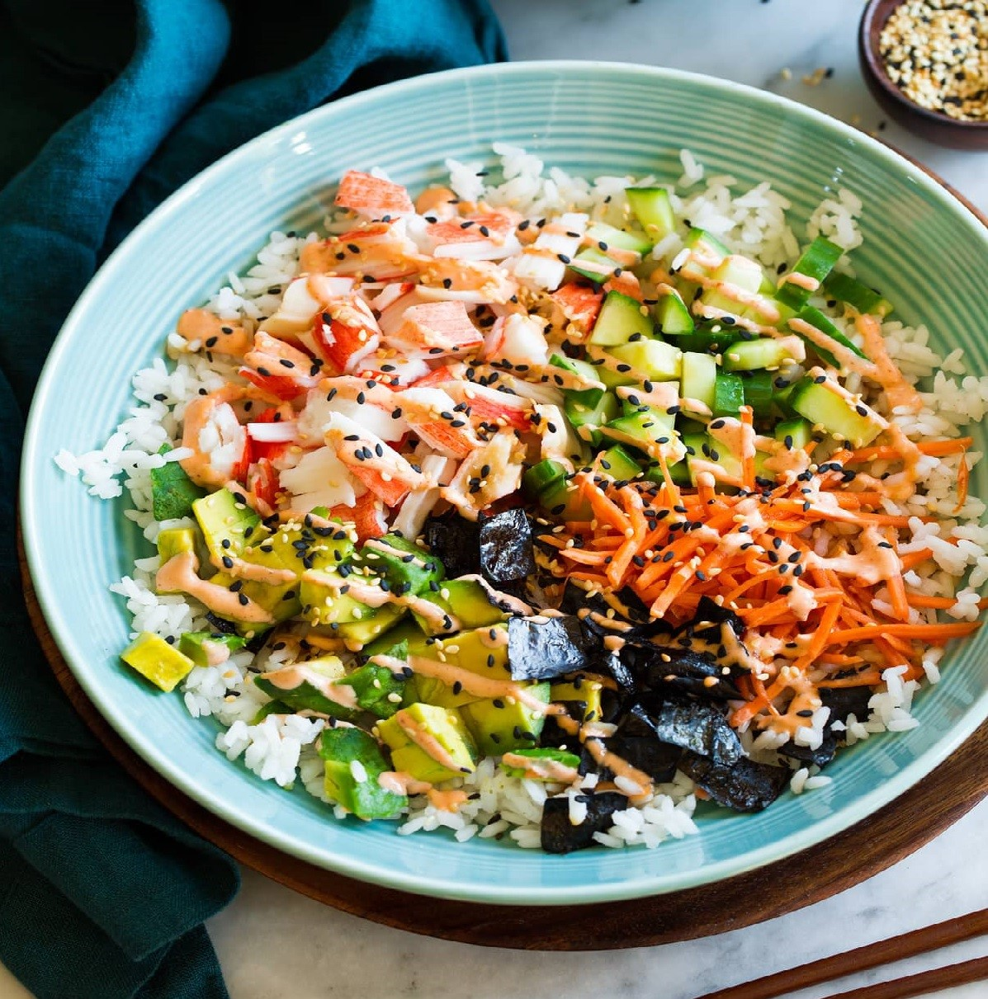

California Roll Sushi Bowls
California Roll Sushi Bowls
California Rolls the Quick and Easy Way!
How could you go wrong with deconstructed sushi piled high in a bowl? It's destined to be a new go-to
weeknight
recipe for you! All the flavors of the traditional California Roll in a simplified deconstructed
version!
Seasoned sushi recipe
is layered together with crab, nori, fresh veggies and sriracha mayo for one crave-able bowl you'll want
to make
again and again!
Prep: 15 minutes | Cook: 25 minutes
Ingredients
-
2 cups dry Sushi Rice
-
5 Tbsp rice vinegar , divided
-
2 Tbsp granulated sugar
-
1/2 tsp salt
-
1/4 cup light mayonnaise or regular mayonnaise
-
1 1/2 Tbsp sriracha
-
1/4 cup low-sodium soy sauce
-
10 oz imitation crab or lump crabmeat,
torn or chopped into small bite size pieces
-
1 1/2 cups diced English cucumber
-
3/4 cup roughly chopped matchstick carrots
-
1 nori sheet, chopped or crumbled into small pieces (add more if you'd like)
-
1 1/2 Tbsp chopped pickled sushi ginger
-
1 large avocado, peeled and diced
-
Black and toasted sesame seeds, for garnish
Instructions
-
Place rice in a fine mesh strainer and rinse under cold water until water runs clear (it will take
about 2
minutes of rinsing).
Tap bottom of strainer with palm of your hand until water no longer falls from strainer (it should
be well
drained).
-
Transfer rice to a medium saucepan along with 2 1/4 cups water. Bring mixture to a full boil then
reduce
heat to low,
cover with lid and simmer 15 minutes. Remove from heat, keep covered and let rest 10 minutes.
-
Meanwhile, in a small saucepan combine 4 Tbsp of the vinegar with the sugar and salt. Heat over
medium heat,
cook and whisk until sugar has dissolved.
Remove from heat, let cool while rice is resting then pour vinegar mixture over rice and toss to
evenly
coat.
-
In a small mixing bowl whisk together mayonnaise with sriracha. Transfer to a sandwich size
resealable bag.
Set aside.
-
Separately in a small mixing bowl whisk together soy sauce and remaining 1 Tbsp vinegar, set aside.
-
In a large mixing bowl gently toss together crab meat, cucumber, carrots, nori, ginger and avocado
OR keep
it separate and just divide chopped
ingredients into sections over a rice layer in serving bowls.
-
Divide prepared rice among 4 or 5 bowls. Top with crab mixture.
-
Spoon soy sauce mixture over top of each serving. Cut a small tip from one corner of the resealable
bag and
drizzle sriracha mayo over each serving.
Serve shortly after preparing (the avocado will start to brown).